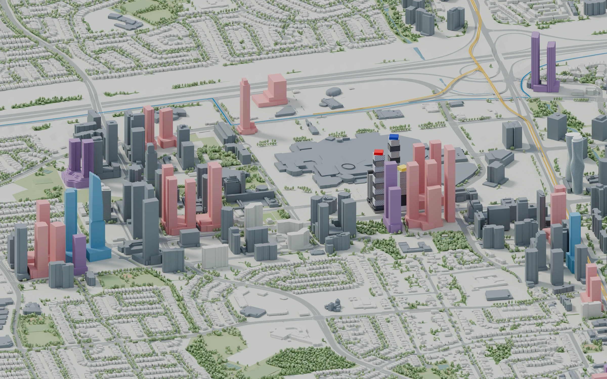
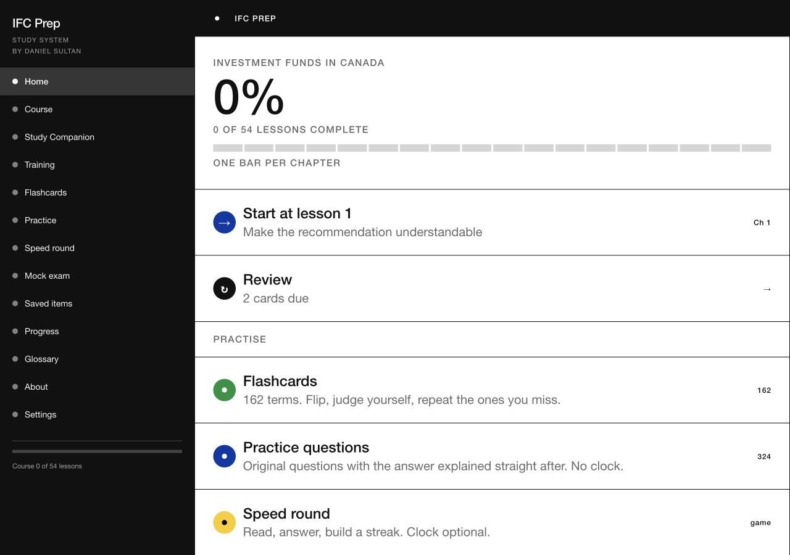
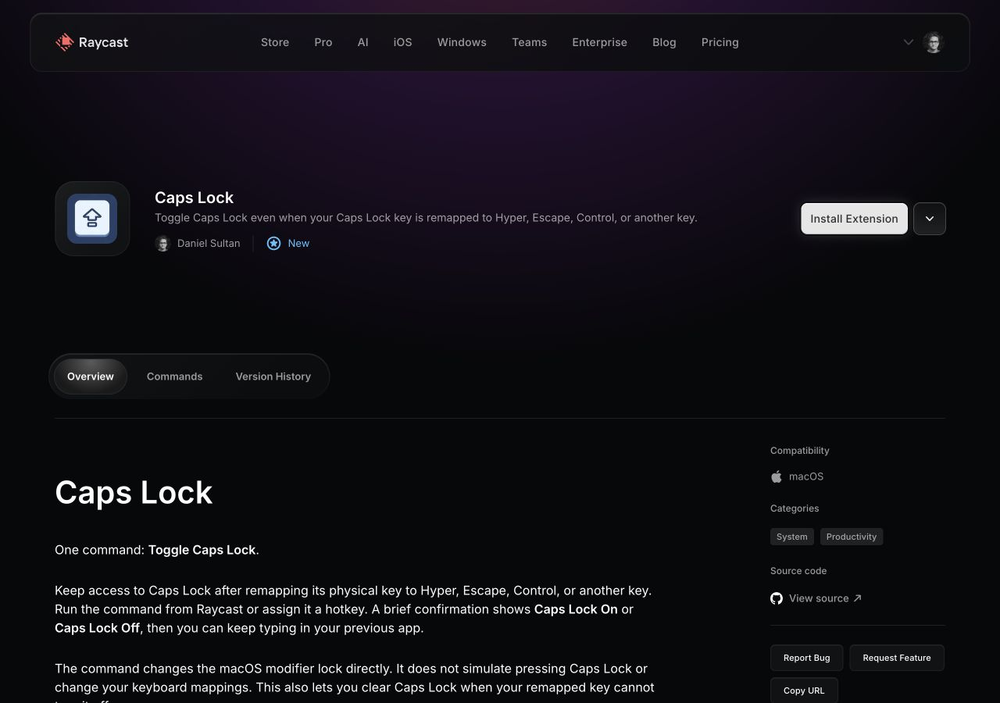

01
Future Mississauga
An interactive city atlas. I combine public data, development drawings and my own Blender modelling to put buildings and transit in context.


City models, learning tools and small software. Open a project, inspect the process or read the source.
An interactive city atlas. I combine public data, development drawings and my own Blender modelling to put buildings and transit in context.

A free CIRE study resource with original explanations, lessons, flashcards and practice. The source code and study content are MIT-licensed.

A separate Investment Funds in Canada study companion, with worked examples, practice questions, offline use and a printable companion.

A published Mac utility built with TypeScript and a native Swift helper. It toggles Caps Lock even when its physical key has another job.

City render: City of Mississauga data · © OpenStreetMap contributors, ODbL 1.0. Contains information licensed under the Open Government Licence – Ontario. Full sources.
Notes grouped in the browser.
A small brief-to-outline experiment.
Local park plans and outdoor breaks.
An older phone, a new use. Public documentation and a toolkit prerelease.
A collection of keyboard shortcuts.
A physical memory-game prototype. I made the board and pieces, tried different grid sizes with classmates and changed the scoring to reward accuracy.

An earlier extension proposal, kept as a public pull request and build record.